Designing the app side of a smart bottle, before the hardware had answers

The Challenge
“How do you design the app for a bottle when nobody can tell you how the bottle behaves?”
Pro2col was adding its first smart device: a white-label water bottle that tracks every sip and syncs with the app over Bluetooth. The client had very little technical information about the hardware, and the manufacturer’s manual contradicted itself. We had to design the full journey, from unboxing to factory reset, while figuring out how the device actually works.
What we had to work within.
No hardware specs
The client had little information about the bottle. Its manual skipped the app entirely, and its reset steps didn’t match the device.
The app can’t see why
A reset bottle, a dead battery and a bottle out of range all look the same to the app. Every message had to be true in all three cases.
One bottle, many buyers
Distributors buy bottles in bulk to resell, but only one bottle can be connected to an account at a time.
Sync only happens nearby
Intake data only uploads over Bluetooth when the app is open and close to the bottle, so every screen has to show when it last synced.
Design what we know, park what we don’t.
With so many open questions, we kept a clear line between decisions already confirmed and questions still waiting on the client or the manufacturer.
Confirmed vs. open
We organized what was already decided and mapped every open question from the initial briefing.
Two filters
A scenario was designed now only if it was in the MVP scope and not blocked by an open question.
One end-to-end flow
A single flowchart for every entry scenario, then wireframes for each happy-path screen in Pro2col’s visual style.
How connected products handle the hard moments.
I benchmarked 11 connected products: wearables like Garmin, Oura, Whoop and Apple Watch, an Ember mug, and smart bottles from our hardware partner, Rebo, Botell, WaterH, Water.io and LARQ. Besides how each one senses and reminds, I looked at the hard moments: pairing, losing, resetting or giving away a device.
Nobody says “Forget”
“Forget” is phone Bluetooth vocabulary. Device apps say Remove, Reset or Erase, and keep actions that stop and actions that erase clearly apart.
Resets live on the hardware
On every bottle we looked at, reset happens on the device and is confirmed by a light pattern. The app only finds out afterwards.
Support needs data
One bottle app collects diagnostics through a hidden gesture. That pointed us to a visible “Details for support” block.
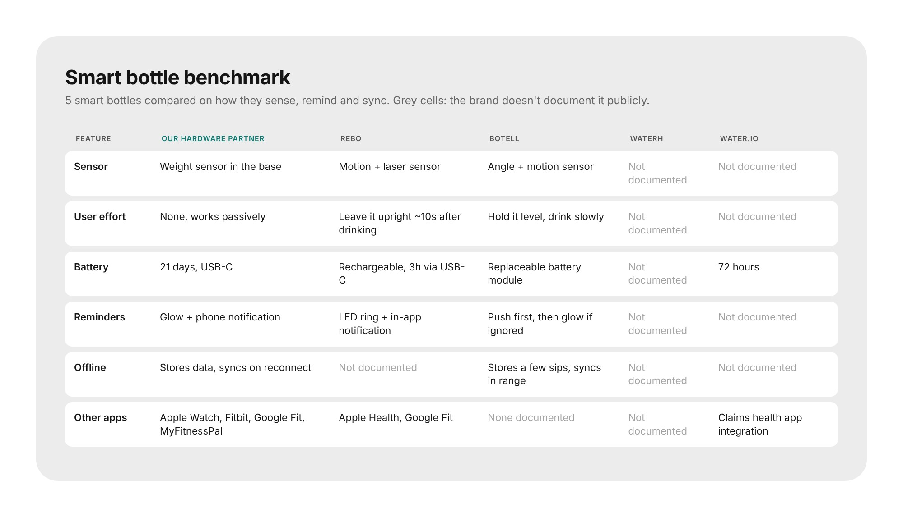
Most brands don’t document how their bottles behave, the same gap we had with our own hardware.
Three ways in, one journey.
I mapped the full journey in one flowchart. Someone can arrive with the bottle in hand or before buying it, as a new user, an existing user with a plan, or one without. All of them converge into the same setup and sync stages, and only diverge where they have to. The flow also maps the error and recovery paths next to the happy path.
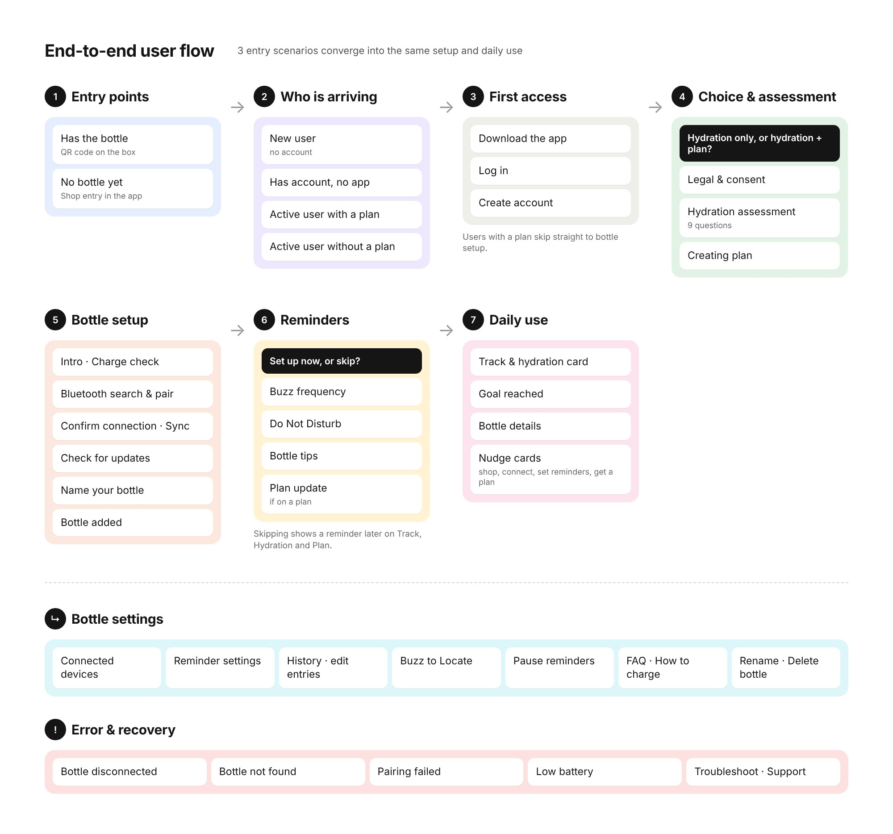
Simplified from the original flowchart: seven stages, plus the settings and error branches.
Three decisions that shaped the flows.
Syncing through Apple Health
Faster to build, but the app would lose buzz reminders, Do Not Disturb, Buzz to Locate and firmware updates. We went with Bluetooth straight to Pro2col.
“Delete”, not “Forget”
The client first asked for “Forget bottle”. The benchmark showed it collides with the phone’s own “Forget device”, so the final flow uses Delete Bottle.
Reset on the bottle first
Resetting on the device is the default path, and the app reacts to it. Deleting in the app first became the edge case, with its own pending state.
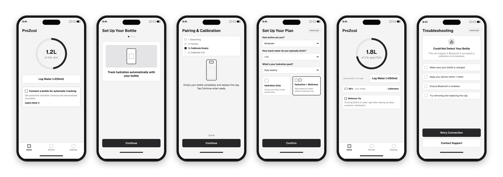
My first low-fidelity happy path, drawn before we had the hardware details.
From the box to a connected bottle.
Bluetooth permission uses the native system dialog, then the bottle blinks so people know they picked the right one from the list. Naming the bottle is optional, and every step has a way out if the connection fails.
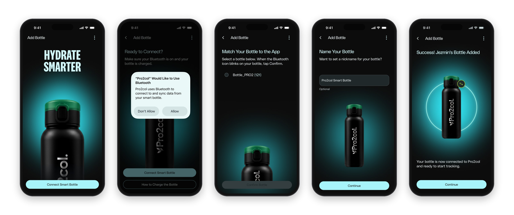
Scan it, or type it.
Each bottle is linked through the ID printed on its box. Scanning the barcode is the main path, and typing the serial number is the fallback, with an FAQ that explains where to find it. Distributors who registered many bottles get an Unlock step to choose which one connects to their account.
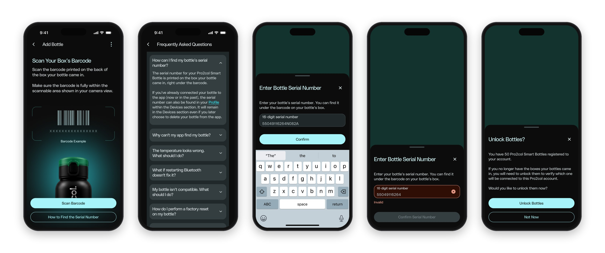
Hydration only, or the full plan.
After pairing, people choose between a hydration-only experience and the full Pro2col plan. Then they set how often the bottle buzzes and their quiet hours, so reminders fit their day.
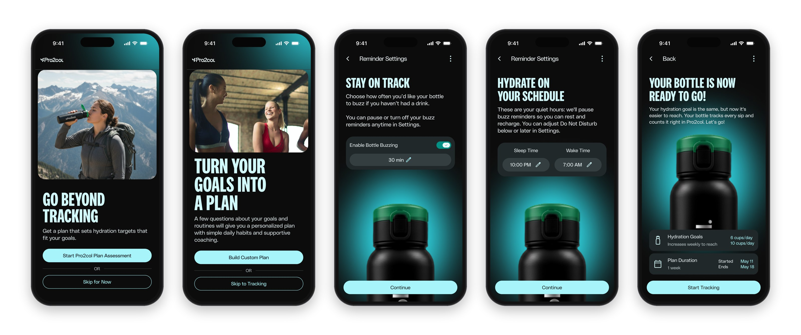
Every sip, already counted.
The hydration card on Track updates on its own, with temperature, battery and last sync. People who don’t have the bottle yet keep logging water by hand, with a clear path to connect it when it arrives.
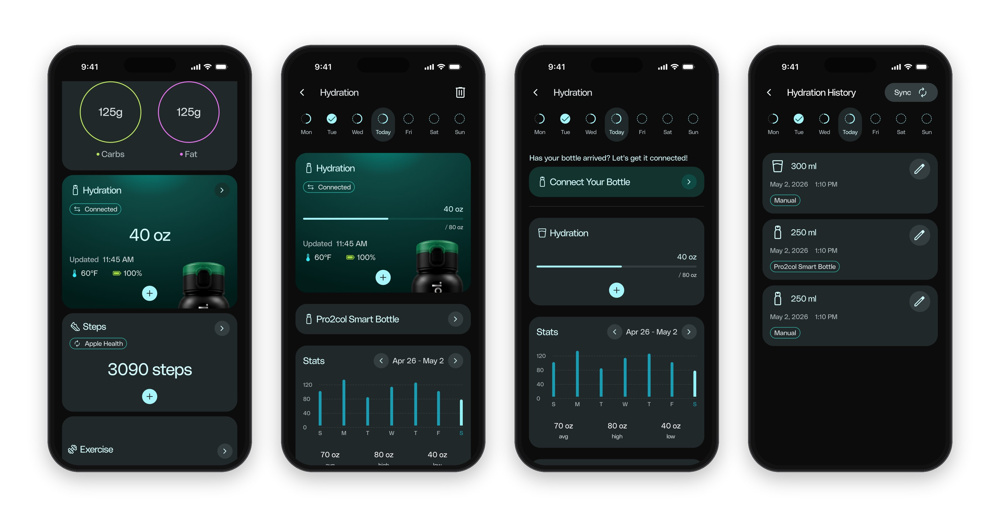
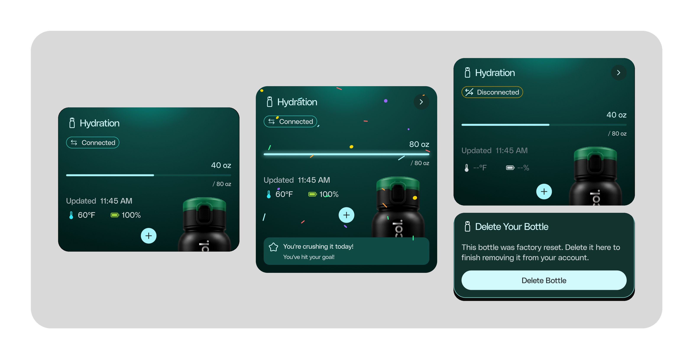
The same hydration card in three states: connected, goal reached, and disconnected after a factory reset.
Find it, pause it, keep it updated.
Settings brings the bottle’s hardware features into the app: Buzz to Locate, pausing reminders, firmware updates and hydration history.
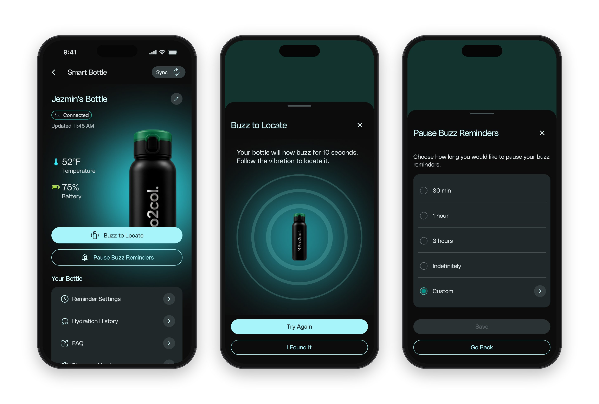
Removing a device without leaving ghosts behind.
When the app detects a reset bottle, it shows a card on Track instead of failing silently. The copy never claims more than the app knows. Deleting keeps the hydration history, and the destructive red is used only for the final action.
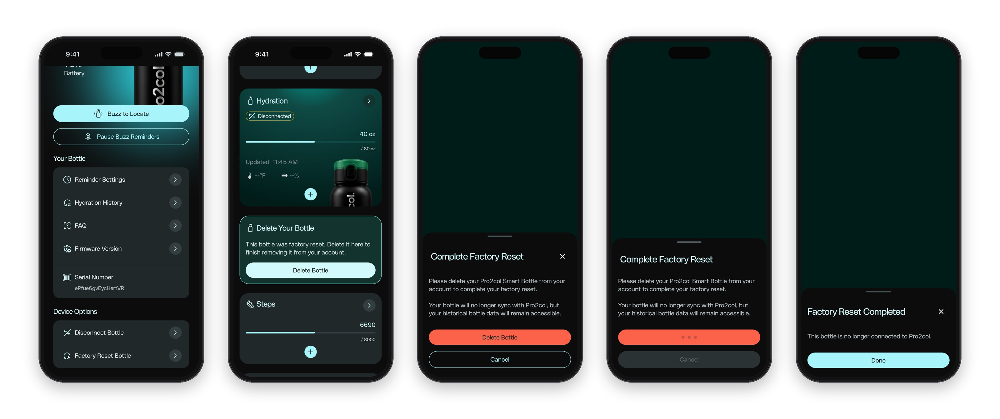
One template for every error.
The firmware has 18 error states, so I designed one modular template instead of 18 screens: a title, a plain message, actions, and a collapsible “Details for support” block with a Copy button. Following the client’s rules, there is no red exclamation mark and no big red button. I explored it as a bottom sheet and as a centered dialog, and we chose the bottom sheet because the developers already used that pattern in other products.
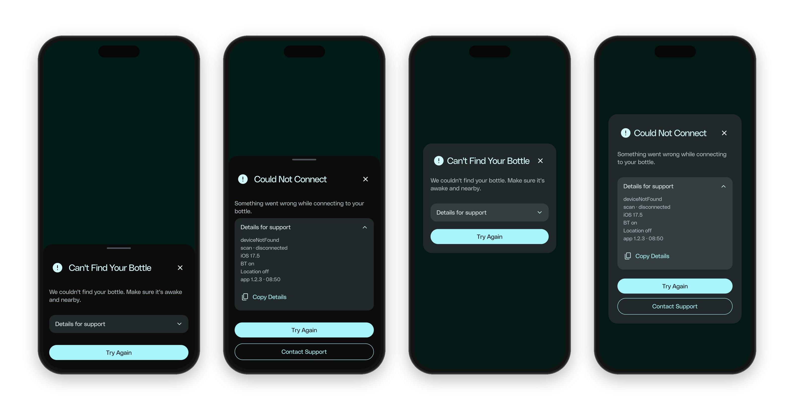
Approved and in manufacturing, launching in February 2028.
The client approved the experience and sent the bottle to production. Our research also filled gaps in hardware documentation the client didn’t have. What I would do differently: let the bottle connect to other apps and to Apple Health too, instead of only to Pro2col.
When the hardware is a black box, honest copy is a design decision. The app should never pretend to know more than the bottle told it.


Let's talk about
your next hire.
danierocruz@gmail.com
Usually respond within 24h · Open to relocation and remote roles.